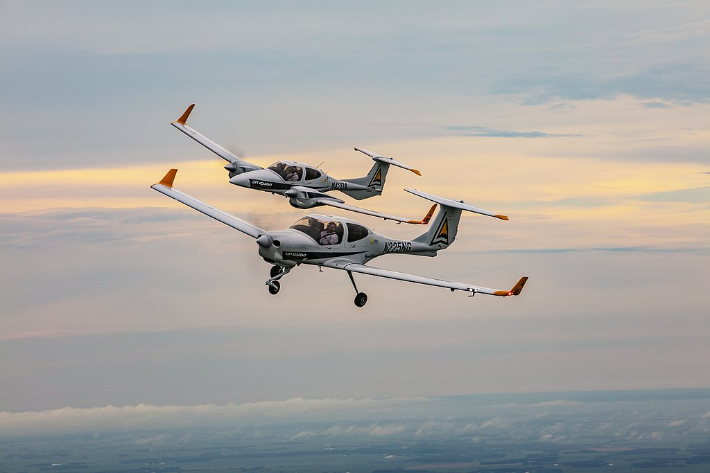

Getting Started

The process to get your FAA private pilot’s license may seem daunting at first. However the requirements to obtain the license are simpler than they seem at first. The first hurdle you must overcome is eligibility. Chances are, if you are a US citizen, you most likely are already eligible. The below list shows all the criteria you must meet to begin your journey. Note: the below eligibility requirements assume you want to operate an airplane, different requirements are established for those seeking to operate a balloon or glider. These requirements are fully outlined in 14 CFR 61.103.
Eligibility Requirements:
- Be at least 17 years of age
- Be able to read, write, speak, and understand the English language
- Pass the required knowledge test (written test) for the rating you are seeking (must have logbook endorsement before attempt)
- Have your logbook endorsed by the CFI who provided your flight training (pre-test sign off)
- Meet experience requirements
- Pass a practical test (oral and flight exam)